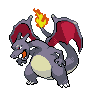

Pixelify Sans (V2 actuelle)
Arène de Jadielle
12 345 pièces · Niveau 36
Le Pokémon sauvage a pris la fuite. Continue ton chemin vers la zone suivante.
Tout est en direct : clique sur les choix, ils changent l'écran. Rien n'est enregistré, tu me dis ensuite ce que tu gardes. Les étoiles ✦ sont déjà acceptées : on compare seulement leur couleur.
La V1 met un contour noir autour du texte qui n'a pas de panneau derrière (nom de zone, nombres de dégâts, « Recherche en cours… »). Regarde surtout le texte blanc en haut à gauche et en bas, posé directement sur l'image.

Le verre dépoli est un fond transparent qui floute le décor derrière. La charte actuelle l'interdit (coût sur téléphone, lisibilité). Le « semi-transparent » donne presque le même effet sans flou. Regarde le panneau en bas à droite et le bandeau en haut à droite.

Le texte courant reste Atkinson Hyperlegible dans les deux cas. Seuls les titres, les boutons et les chiffres changent. Press Start 2P (V1) est plus large : à 390 px elle prend plus de place.
Arène de Jadielle
12 345 pièces · Niveau 36
Le Pokémon sauvage a pris la fuite. Continue ton chemin vers la zone suivante.
Arène de Jadielle
12 345 pièces · Niveau 36
Le Pokémon sauvage a pris la fuite. Continue ton chemin vers la zone suivante.
Aujourd'hui l'icône est un double éclat bleu qui tourne au vert. La V1 mettait une étoile ✦ jaune après le nom. Chaque carte montre l'étoile dans une liste, sur un décor de route et dans un titre de fiche.